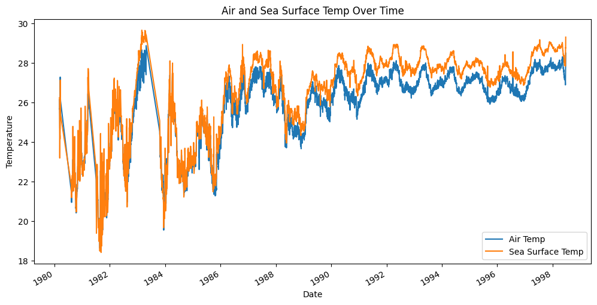

We conducted a time series analysis on sea surface temperature data using the ARIMA (AutoRegressive Integrated Moving Average) model. The analysis included data preparation, visualization, model training, and evaluation.
A plot was generated to visualize the trends in air and sea surface temperatures over time. The graph illustrates the variations in both temperatures, offering an initial insight into the dataset.
Autocorrelation Function (ACF) and Partial Autocorrelation Function (PACF) plots were employed to understand the autocorrelation structure of the sea surface temperature data. These plots aid in determining the appropriate parameters for the ARIMA model. The dataset was split into training (80%) and test (20%) sets. The model was then fitted to the training data.
The ARIMA model was used to make predictions on the test set. The Mean Squared Error (MSE) was calculated as a measure of prediction accuracy.
Mean Squared Error: 0.4631620752313326
A lower MSE indicates better performance; however, it's crucial to consider domain knowledge and compare the results with alternative models for a comprehensive assessment.
In conclusion, our time series analysis provides insights into the sea surface temperature trends. The ARIMA model, with the chosen parameters, demonstrates a certain level of predictive accuracy, as indicated by the MSE. Further refinement and comparison with alternative models may be explored for a more robust analysis.